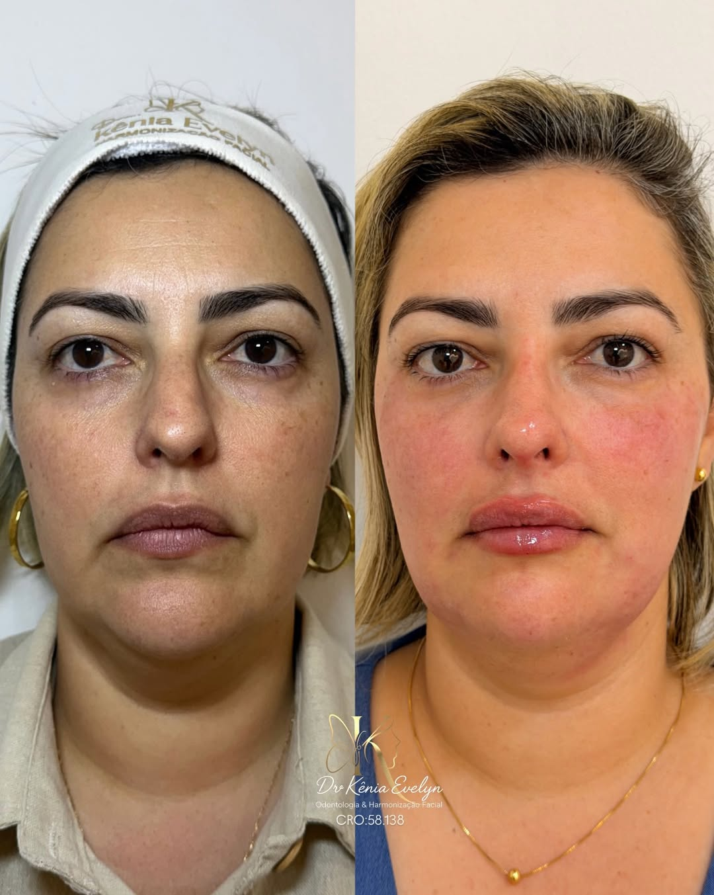
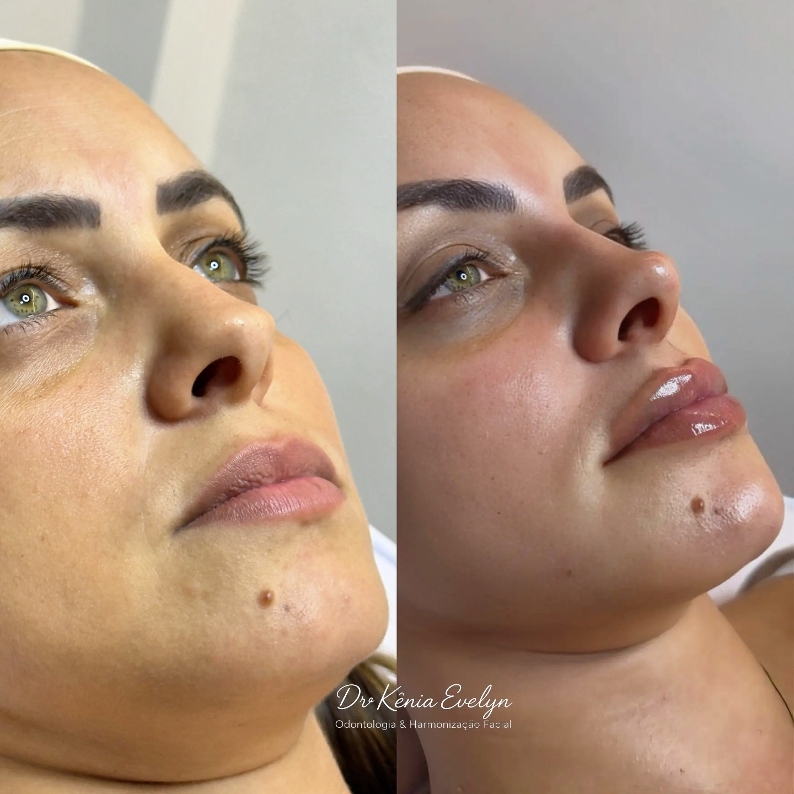
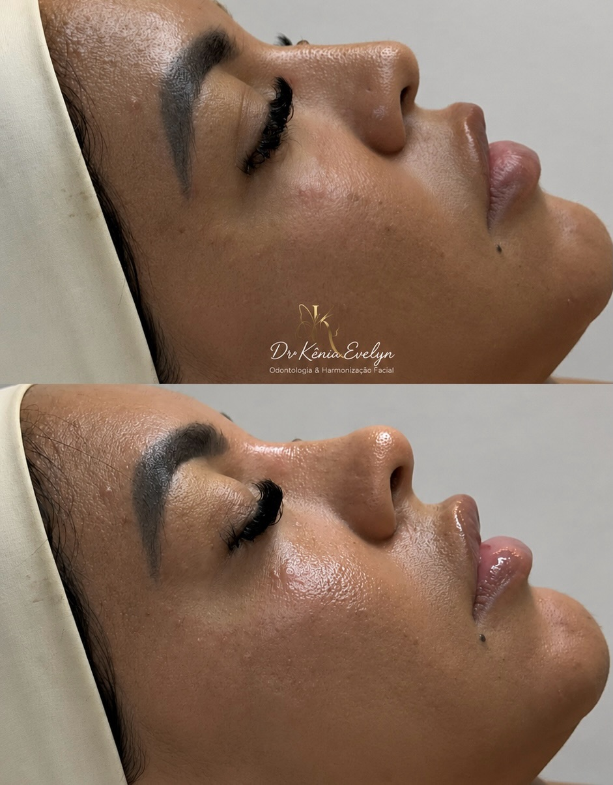
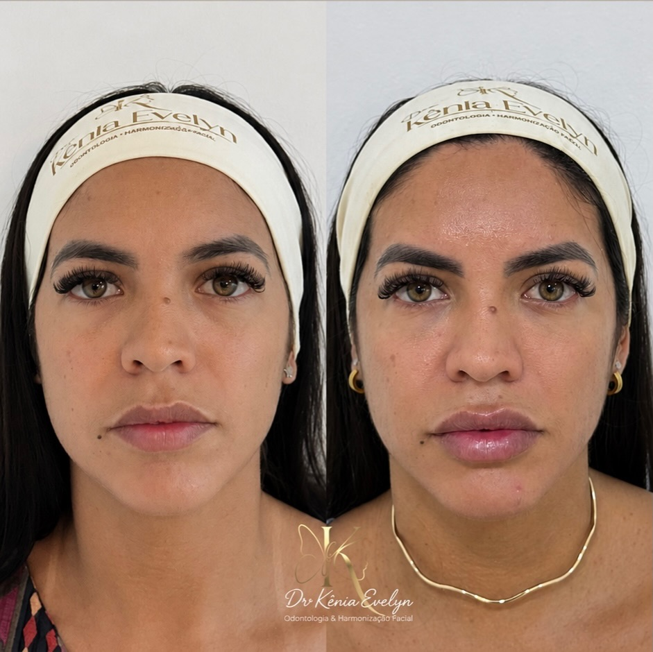
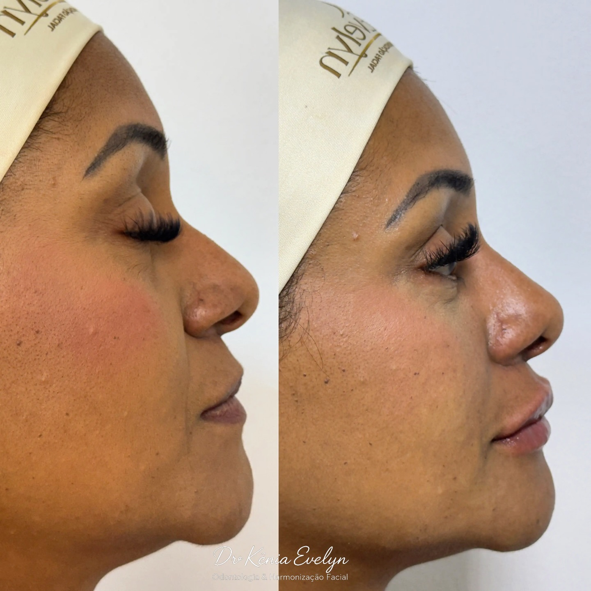
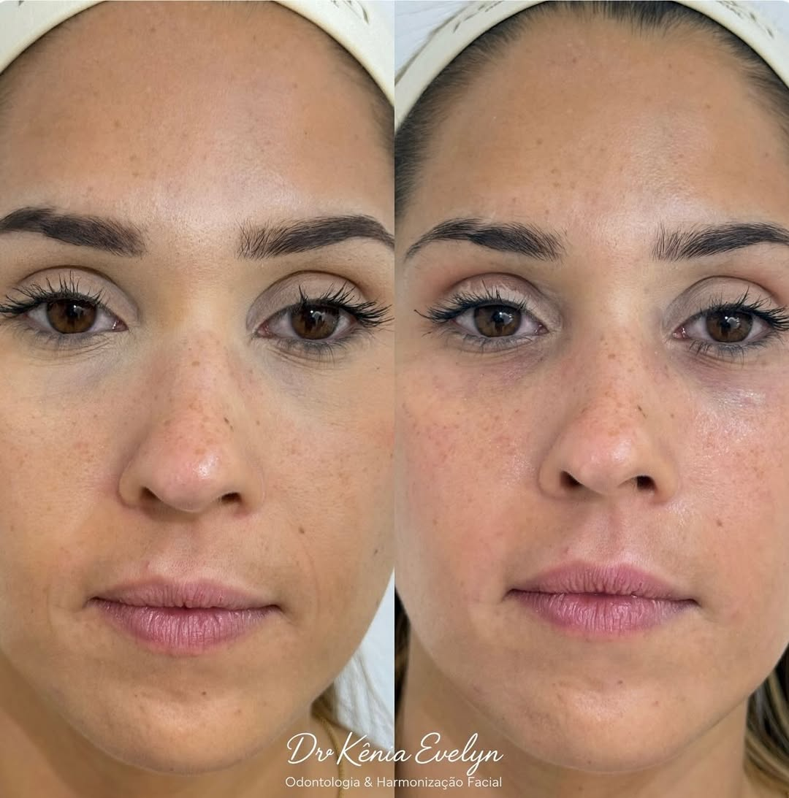
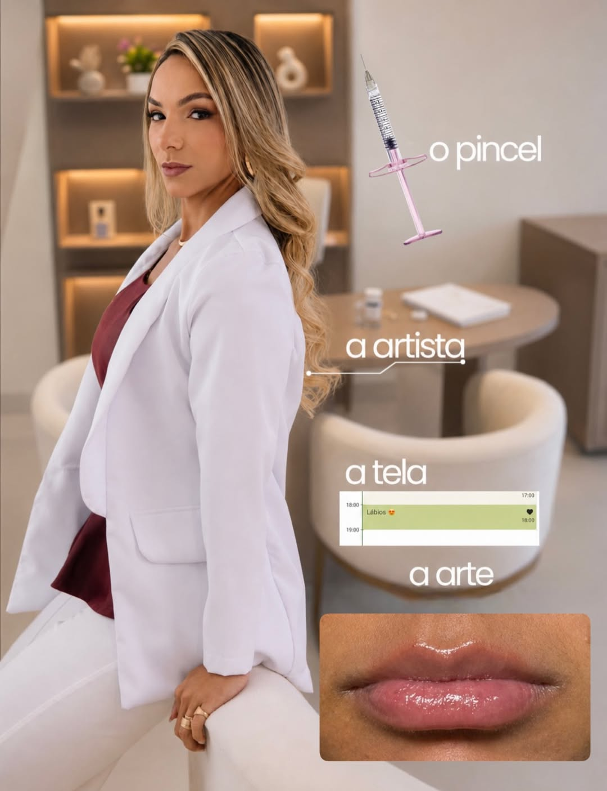

Planejamento minucioso para valorizar seus traços, respeitar sua anatomia e preservar aquilo que faz você ser única.
Sou cirurgiã-dentista graduada pela UERJ, pós-graduada em Saúde da Família e especialista em Harmonização Orofacial. Mais do que transformar rostos, a minha verdadeira missão é resgatar a sua melhor versão.
Acredito em uma beleza que não deforma, mas que realça. Por isso, meu trabalho é totalmente focado na naturalidade, elegância e segurança. Cada procedimento é planejado de forma única, respeitando a sua identidade e promovendo um gerenciamento inteligente do envelhecimento.
Aqui, o cuidado começa no acolhimento. Estou pronta para te ajudar a sorrir e a se olhar no espelho com ainda mais orgulho.
Tudo começa com uma avaliação presencial e minuciosa. Compreender características, proporções, necessidades e expectativas antes de definir qualquer procedimento.
Nada é feito de forma automática. Cada ponto e cada escolha são planejados de acordo com a anatomia e as características individuais.
O objetivo é valorizar, não descaracterizar. A execução busca equilíbrio e naturalidade, respeitando os traços originais.
Procedimentos planejados para valorizar diferentes aspectos da face, sempre considerando proporção, anatomia e individualidade.
Procedimentos voltados ao estímulo de colágeno e à melhora da firmeza e qualidade da pele, dentro de um planejamento individualizado.
Utilizado de forma estratégica para trabalhar proporções e contornos, podendo contribuir para alinhamento do perfil, projeção do queixo e definição sutil dos lábios.
Aplicação planejada para suavizar linhas de expressão, preservando a naturalidade dos movimentos e da expressão facial.
Uma harmonização bem planejada começa muito antes da aplicação. É preciso observar proporções, estruturas, características individuais e aquilo que torna cada rosto único.
A escolha dos materiais e a compreensão da anatomia fazem parte de uma abordagem que prioriza planejamento e naturalidade.
A escolha dos materiais e a atenção à sua procedência fazem parte de um atendimento responsável e cuidadoso.
Cada rosto possui características únicas. Os resultados apresentados refletem um trabalho planejado de forma individual, buscando valorizar os traços de cada paciente com naturalidade, equilíbrio e elegância.

Resultado Individualizado

Planejamento de Perfil

Valorização de Traços

Equilíbrio Facial

Contorno e Proporção

Naturalidade e Equilíbrio
"Cada resultado começa com uma avaliação individual e um planejamento pensado para aquele rosto."
O objetivo não é criar um rosto diferente. É valorizar aquilo que já é seu.
Entender expectativas e particularidades.
Observar cuidadosamente características e proporções.
Definir uma estratégia individualizada.
Realizar o atendimento com atenção aos detalhes.
A estética mais sofisticada é aquela que respeita a identidade de quem a recebe.
Por isso, cada escolha deve ter um propósito: valorizar, equilibrar e preservar a naturalidade.
Agende sua avaliação e converse sobre um planejamento pensado para você.
Agende sua avaliação* Avaliação presencial

Conheça mais sobre meu trabalho, resultados e conteúdos sobre Harmonização Orofacial.
@dra.keniaevelyn